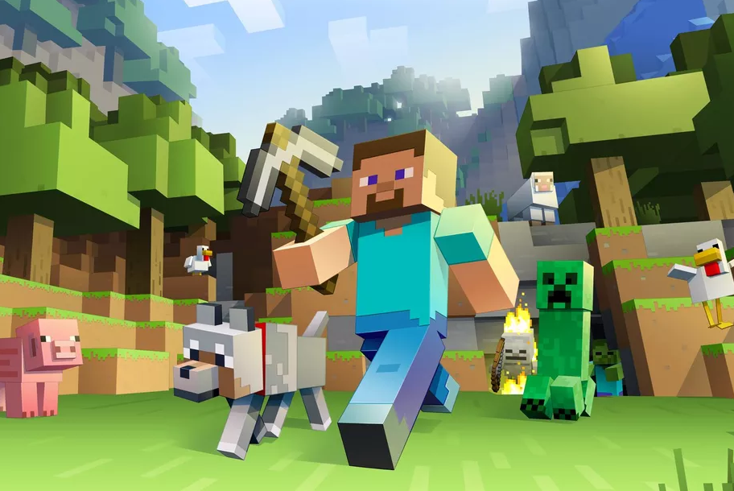
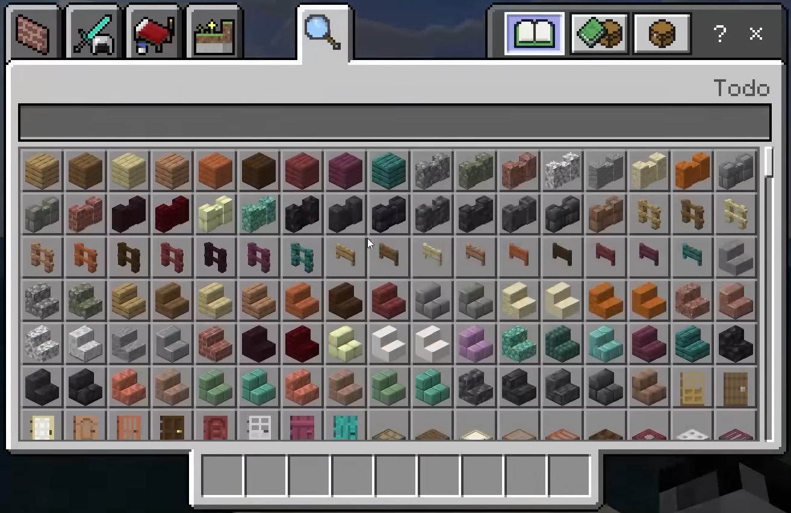
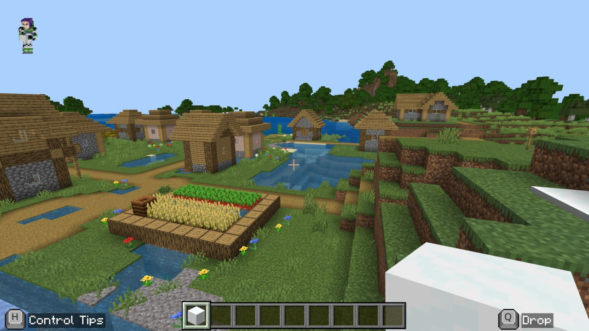

r = 0.74
Inventory Usability Driver
Strongest correlation with uninterrupted flow. Lower inventory friction directly prolonged cognitive immersion.
90%+
Audiovisual Immersion
Over 90% of participants cited ambient soundscapes as core drivers of deep spatial immersion.
100%
Temporal Distortion Rate
100% of participants ($N=117$) experienced altered time perception during creative task loops.
r = 0.71
Social Connectivity
Chat and co-creation served as cross-construct amplifiers for sustained player engagement.
“
“Usability in digital environments extends far beyond menu navigation. When interface friction is removed, cognitive load drops—allowing players to enter an uninterrupted flow state where time feels continuous, elastic, and deeply engaging.”
EMPIRICAL DATA ARTIFACTS
Research Visualizations & Distribution Maps
Full-resolution research charts, inventory usability models, and participant flow distributions.



Flow Facilitators (Quantitative Signals)
- Inventory Ease (r = 0.74): Seamless item retrieval is the single largest quantitative driver of cognitive flow.
- Social Chat (r = 0.71): Social connectivity acts as a cross-construct amplifier, heightening immersion.
- Audiovisual Impact (90%+): Ambient soundscapes account for over 90% of reported immersion spikes.
Strategic Product Recommendations
- Holistic Ergonomics: Treat audio design as a primary usability layer rather than secondary embellishment.
- Cognitive Load Reduction: Streamlining interface complexity allows users to maintain uninterrupted mental flow.
- Creative Loop Design: Creative task loops trigger the strongest alteration in session time perception.